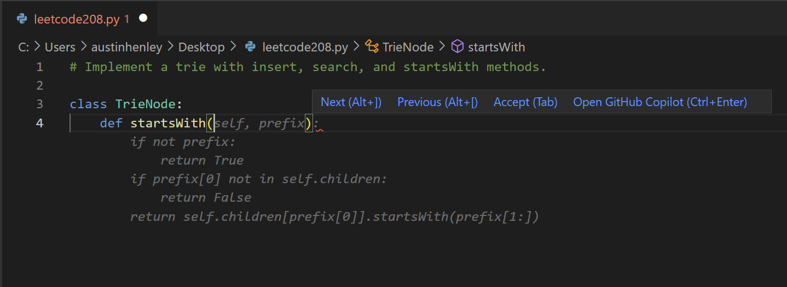
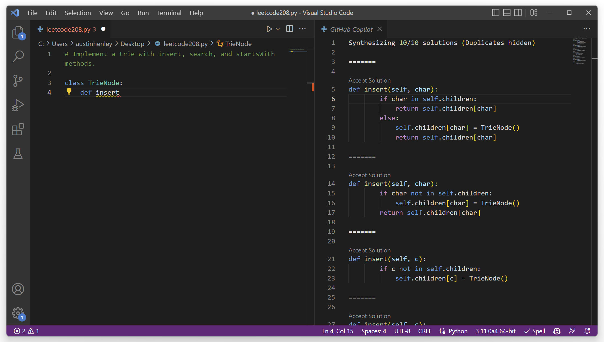
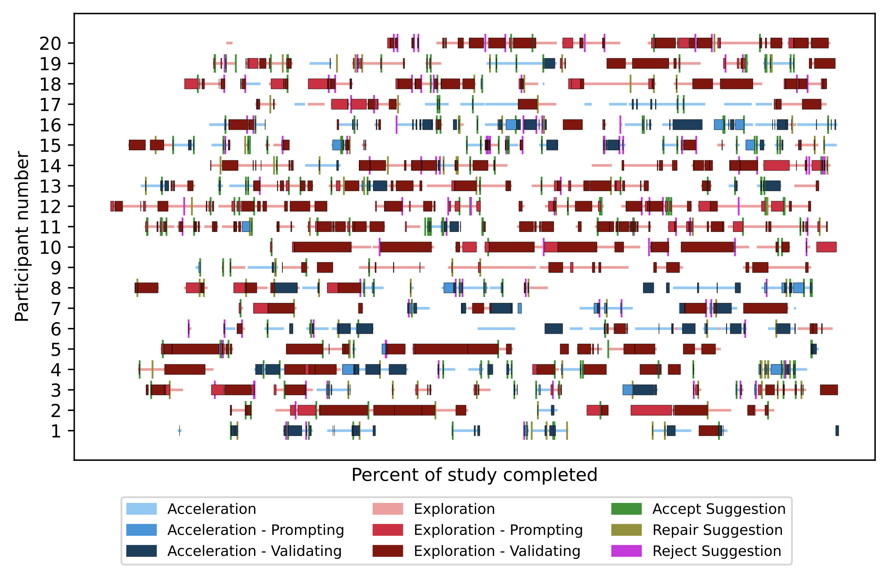

Associate Teaching Professor
Software and Societal Systems Department
School of Computer Science
Carnegie Mellon University
This morning I read a paper, Grounded Copilot: How Programmers Interact with Code-Generating Models, that reports a qualitative study on how programmers interact with Copilot.
The main takeaway is that programmers use Copilot in two modes: either for accelerating what they are already doing or for exploring what to do next.
Acceleration is when they already know what they want to do and Copilot just gets them there faster. Much like an intelligent autocomplete.
Exploration is when they do not know how to proceed with their task and Copilot provides them a starting point. Similar to a context-aware assistant that presents various options.
I've noticed examples of both from my own experience tinkering with Copilot. In one case, I started writing a function to parse s-expressions when Copilot presented a suggestion that looked close enough to what I was going to do anyway. In another case, I wasn't sure how to do something in React but Copilot gave me suggestions demonstrating library calls that I didn't know about.
Lab study. They recruited 20 programmers (16 from academia) to take part in an 60-minute lab study involving a warmup task followed by a core programming task and then an interview. Participants received one of four different programming tasks, such as working on an existing chat client or solving puzzles from Advent of Code.
Analysis. To make sense of the data, the researchers used grounded theory, an iterative process that involves labeling the raw data, refining the labels as you go, and grouping the labels to form concepts. The end result is an inductively built hierarchy of labels that applies to the entire dataset.
The paper then goes on to describe a variety of behaviors of each mode.
The main scenario they found for accelerating is when the programmer is able to decompose the problem into microtasks. Copilot seems to do a good job of suggesting code for these small, well-defined scenarios.
"I think of Copilot as an intelligent autocomplete... I already have the line of code in mind and I just want to see if it can do it, type it out faster than I can."
Similarly, participants are often happy with Copilot's ability to complete single lines of code, much like traditional autocomplete features.
However, long suggestions can be problematic. Participants felt compelled to read the suggestions even though it broke their flow.
"So instead of writing the full line, I have to stop, look at the code, think whether I want this or not."
Several participants remarked about Copilot's long suggestions being a distraction and taking considerable time to understand.
To validate suggestions, the participants scan the suggestions for a specific pattern or shape, made up primarily of control flow structures.
When the programmer is not able to decompose the problem, they turn to Copilot to explore.
"Copilot feels useful for doing novel tasks that I don't necessarily know how to do. It is easier to jump in and get started with the task."
To explore, participants would explicitly prompt Copilot with comments. 15 of the 16 participants did this.
They used natural language comments to have greater control over the suggestions in less time. The alternative would be writing a sufficient amount of code for Copilot to have enough context to produce relevant suggestions.
"The kind of comments I would write to Copilot are not the kind of comments I would use to document my code."
A noteworthy finding is that the participants write comments differently depending on if it is for Copilot. They will then go clean up or delete the comments!
There is value in having multiple suggestions. In fact, 14/16 of the participants used the side pane to see multiple.
Although there was a tendency to use the first suggestion in the list, sometimes they would cherry pick pieces from different suggestions.
However, 5 of the participants indicated that the side pane adds additional cognitive load.
The programmers spent considerable time reading the suggestions, much like a code review, but only a few participants executed the code to validate the behavior.
In the event that the suggestions did not do exactly what the programmer wanted, many times they would still accept one then edit it, thus providing a template with the desired control flow.
For three out of four of the tasks, participants were in exploration mode far more often than acceleration mode. During the other task, participants spent a bit more than half their time in acceleration mode, likely because it involved "simple business logic".
It is still an open question as to how the results will generalize to other tasks, to codebases that are large or that programmers are already familiar with, or to those with more industry experience.
Research like this is just the starting point to a better understanding of how programmers interact with large language model-based programming assistants.
In fact, my team has been working on improving the interaction design of such tools. I'll share more soon.